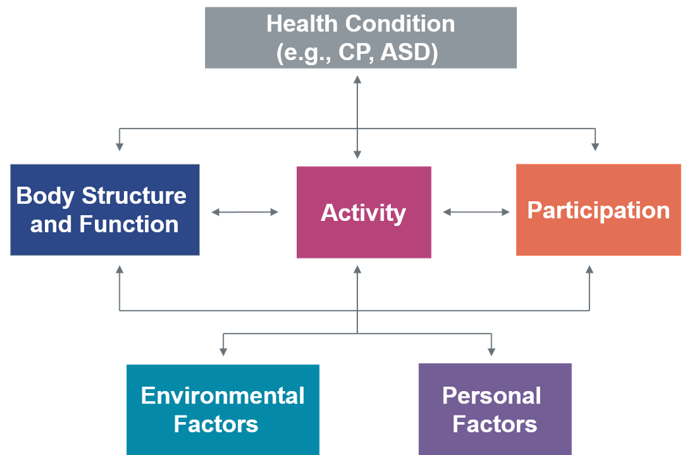
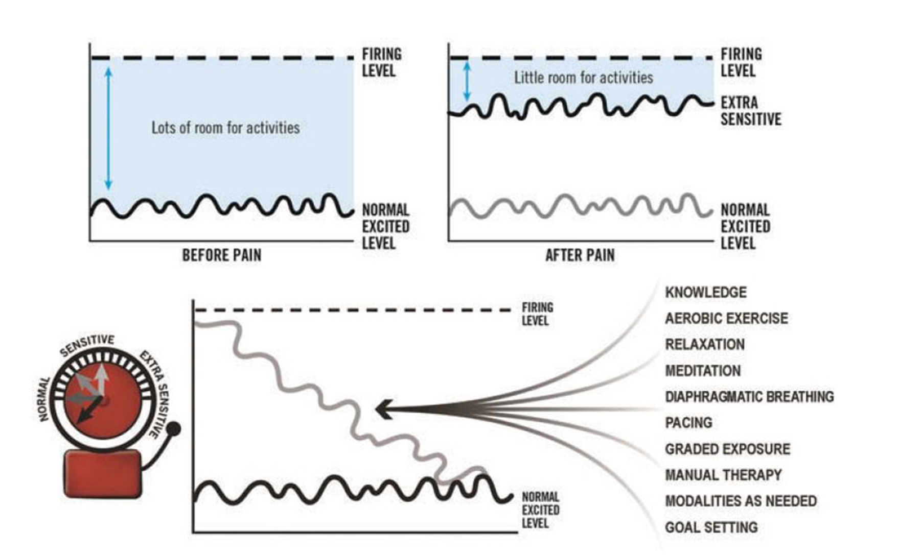
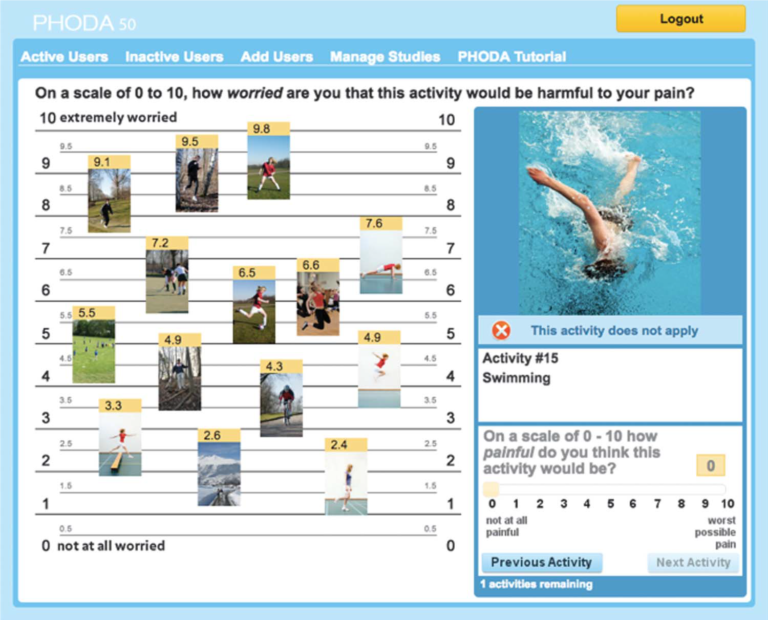

Formation douleurs chroniques (partie II)
Principes de la prise en charge
La douleur n’est pas l’objectif.
- On vise avant tout à permettre au patient d’améliorer sa qualité de vie en travaillant les activités et la participation, tout en favorisant l’autogestion des symptômes.
- Il faudra donc établir avec le patient des objectifs centrés sur les activités et la participation.

Important
L’amélioration de la douleur ne vient qu’ultérieurement et peut mettre du temps avant de se marquer.
Pas d’imagerie
- Effet nocebo démontré
- Lésions banales (arthrose) au lien causal incertain et, tout au plus, partiel
- Éviter les termes anxiogènes (dégénérescence, arthrose, usure, abîmé)
- Privilégier un langage neutre et rassurant (l’imagerie ne met rien de particulier en évidence ; on ne retrouve que des modifications tout-à-fait habituelles pour des personnes de votre âge)
Les 5 étapes de la prise en charge
- Modèle PSCEBSM
- Éducation à la neurophysiologie de la douleur
- Entretien motivationnel
- Détermination des objectifs
- Plan de traitement
L’éducation à la neurophysiologie de la douleur
Pourquoi ?
- Permet intrinsèquement une amélioration du patient
- Reste insuffisante seule et devra être combiné à l’activité physique
Quoi ?
- La sensibilisation centrale qui entraîne la douleur nociplastique chronique et l’activation précoce du système d’alarme
- Le découplage entre douleur et lésion.
- L’importance des facteurs psychosociaux et la nécessité de leur prise en charge
Comment ?
- Utiliser des métaphores
- DDPQ : demander, déterminer, partager, questionner
- Teach back


L’entretien motivationnel
Définition
L’entretien motivationnel une approche centrée sur le patient s’efforçant à lui faire modifier ses comportements de santé. Plus qu’une technique d’écoute, il s’agit d’une technique de persuasion active.
Détermination des objectifs
Objectifs SMART
Tip
Préférer des objectifs fonctionnels tels que “Je veux marcher un quart d’heure” plutôt que des objectifs centrés sur la douleur du style Je veux arrêter d’avoir mal
L’échelle fonctionnelle spécifique au patient (PSFS) peut aider à cette fin
- Spécifique
- Mesurable
- Atteignable
- Pertinents pour le patient (relevant)
- Temporellement définis
Les différents outils du plan de traitement
Vue d’ensemble
- Exposition graduelle
- Techniques manuelles
- Gestion du stress
- Prise en charge des troubles du sommeil
- Coaching de vie
- Activité physique graduée
- Gestion de la reprise du travail et des activités
- Médicaments
L’exposition graduelle
- Permet de lutter contre la kinésiophobie (la dépister !)
- Établir une hiérarchie des peurs (PHODA)
- Commencer par confronter le patient aux activités qui lui font le moins peur et le confronter ensuite à des activités qui l’effraient de plus en plus
- Continuer l’éducation à la physiologie tout du long

La gestion du stress
- Relaxation
- Méditation
- Hypnose
- Pleine conscience
Prise en charge des troubles du sommeil
- Hygiène du sommeil
- Technique de contrôle du stimulus
Activité physique graduée
- Pierre angulaire du traitement
- Objectif : travailler dans la zone d’adaptation
- Trop peu = pas d’adaptation
- Trop = profil toblerone

Approche time-contingent

Les médicaments
- Place très limitée dans la douleur chronique
- Se limiter aux antalgiques de pallier 1
- Si douleur neuropathique, certains antalgiques atypiques sont intéressants
- Amitryptilline
- Duloxétine
- Gabapentine
- Prégabaline
Warning
Faible niveau de preuves et efficacité modérée des antalgiques atypiques
Les opioïdes
Danger
Les opioïdes sont à proscrire de la prise en charge de la douleur chronique !
Raison N°1 : ils sont inefficaces
- Quasiment aucun effet positif sur la douleur chronique (-1/10 sur l’échelle analogique de douleur et +1/10 sur une échelle fonctionnelle, par rapport à un placebo).
- 10-15% de répondeurs par rapport au placebo.
- Aucun RCT de plus de six mois
Raison N°2 : ils ont de lourds effets indésirables
Effets indésirables précoces
- Nausées, vomissements
- Constipation
- Dépression respiratoire
- Sédation
Effets indésirables tardifs
- Hyperalgésie par sensibilisation du SNC
- Hypogonadisme, dysfonction sexuelle
- Chutes, fractures
- Apnées du sommeil
En outre, un syndrome sérotoninergique peut survenir avec le Fentanyl, l’Hydromophone, l’Oxycodone, la Péthidine, le Tapentadol, et le Tramadol
Raison N°3 : ils entraînent une dépendance
- La Belgique se situe dans les 6 premiers consommateurs d’opioïdes au monde
- En 2019, la Belgique était le premier consommateur au monde de Tramadol.
- 10% des belges se sont vu prescrire des opioïdes en 2017
- 3% sont des grands consommateurs chroniques, lesquels représentent 34% de toutes les DDD délivrées cette années.
- La présence de douleurs chroniques est un facteur de risque de la dépendance aux opioïdes
Important
Mieux vaut éviter une consommation problématique que chercher ensuite à la guérir
Leurs effets indésirables les rendent contre-productifs dans la douleur chronique car ils interfèrent avec l’activité physique, au centre du traitement, et majorent la sensibilisation du SNC, le tout sans apporter d’efficacité notable et en créant un risque réel de dépendance.
S’il faut passer la main
La communication est importante si on réfère à un physio ou en clinique de la douleur :
- Motif de la consultation
- Éléments du modèle ICF
- Résultats des questionnaires
- Obstacles et motivations des patients
- Objectifs spécifiques du patient et du traitement
- Traitement actuel et plan de traitement
- Résultat actuel du traitement
Conclusion
Prendre en charge un patient douloureux chronique est un travail multidisciplinaire de longue haleine mais, avec une approche commune et un peu de formation, on peut s’en sortir !

Douleurs chroniques — Prise en charge